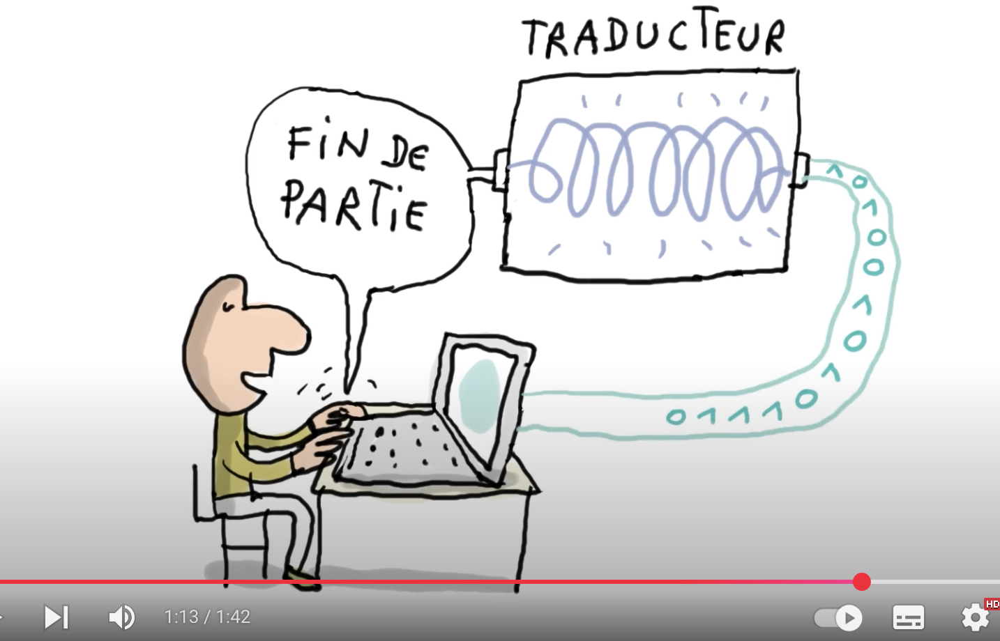
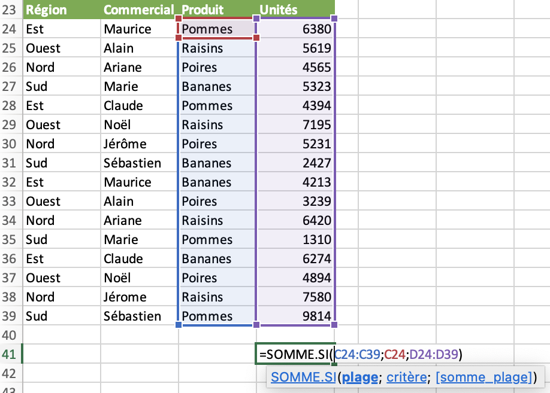
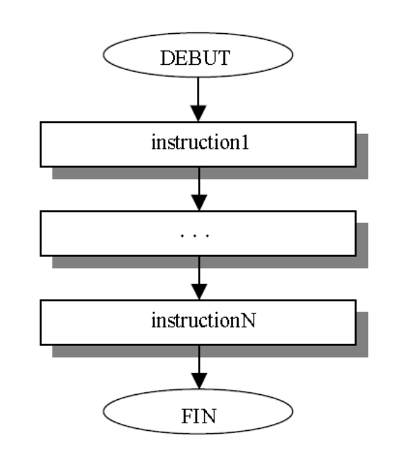
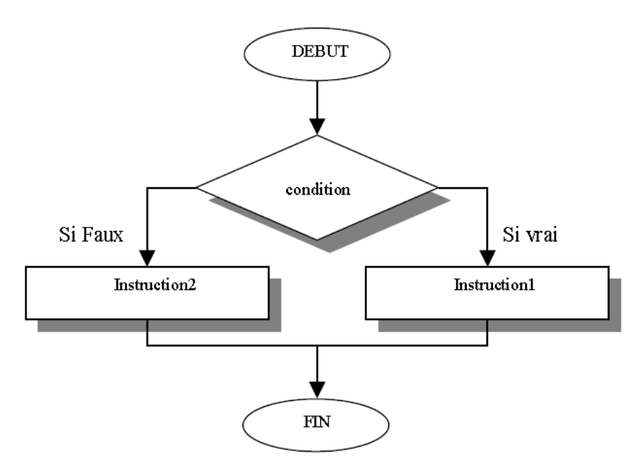
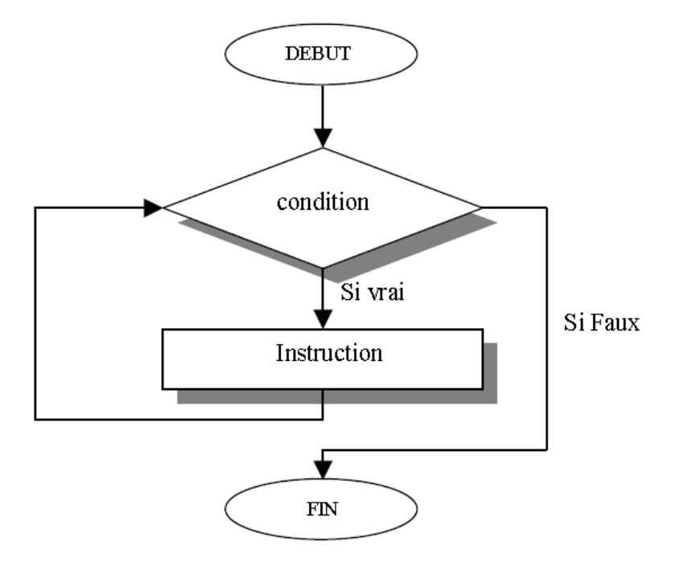
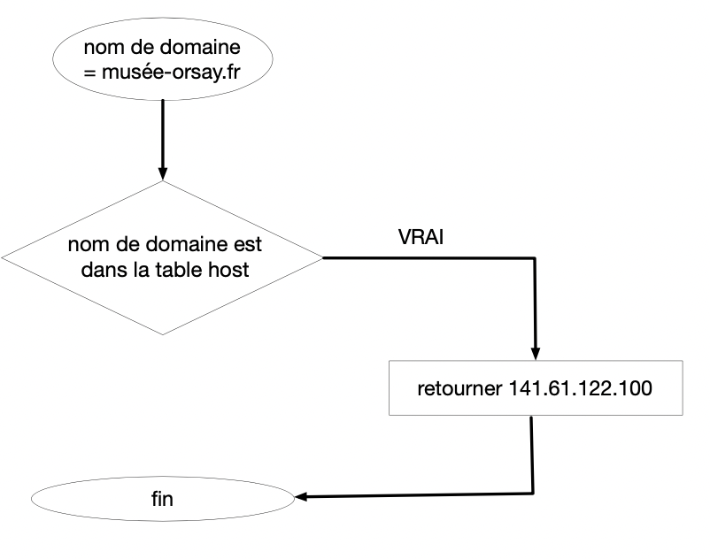
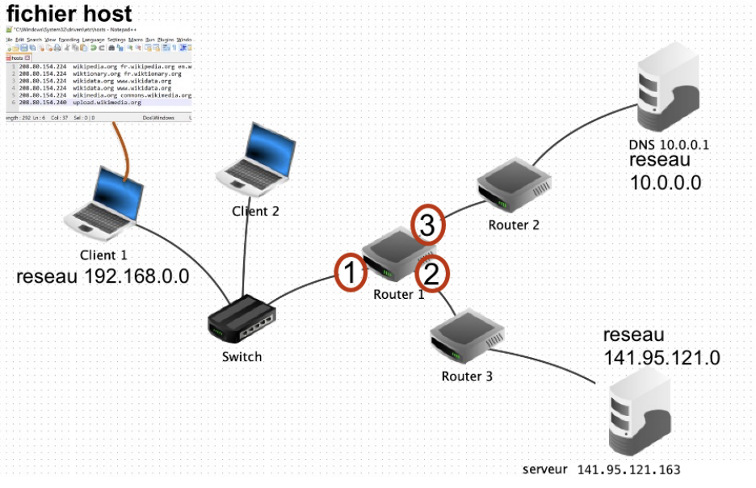

langage informatique
Langage informatique
Langage humain et langage machine
Dans la vidéo suivante, on voit que le langage utilisé pour les machines est un langage structuré, non ambigü, comme on l’utiliserait pour commander un robot. Ces instructions passent alors par un interpréteur, qui traduit celui-ci en langage machine et en binaire.

francetv.fr
Le langage permet de communiquer avec les machines, mais d’une manière différente du langage utilisé par les humains.
Les langages créés par l’homme pour communiquer avec les ordinateurs sont des langages artificiels. Ils doivent être formalisés et non ambigus pour pouvoir être interprétés par une machine.
Les langages informatiques sont tous équivalents: si un problème est susceptible d’être résolu par un langage, alors tous les langages informatiques le peuvent.
Pour des raisons de commodité, nous aborderons les langages par le langage naturel, en essayant de le formuler de la manière la plus proche d’un langage informatique, tout en rendant sa lecture facile. Nous verrons aussi une manière de l’écrire sous forme d’algorigramme (un langage visuel), mettant en evidence la structure. Puis plus tard, nous aborderons le langage Python, afin de réaliser des programmes.
Langage algorithmique
L’interpreteur va comprendre un petit nombre d’instructions et symboles, et un petit nombre de combinaisons entre ces symboles.
Mémoire de l’ordinateur
Pour enregistrer un programme en mémoire, l’interpréteur va repérer les identificateurs de valeur, les opérateurs, les instructions. Tout cela va être traduit en binaire, mis dans la même mémoire, mais avec des statuts différents:
Comme les identificateurs de valeur pointent vers des données qui peuvent varier, on les appelera des variables. Ce sont par exemple les données de vente de différents commerçants, les points de vie, la position sur une grille, … Tout ce qui peut évoluer pendant l’execution du programme, et que l’on appelle généralement des données.

TP Excel sur les ventes de fruits
Dans une feuille du tableur Excel, les cellules contiennent des étiquettes (données textuelles), des données numériques, ou des instructions de calcul sur ces données. Tout ceci est dans une CASE, un peu comme le rangement des éléments d’un programme dans la mémoire de la machine.
Dans un programme, les données sont repérées par un nom plutôt que par des coordonnées de classeur.
exemple 1: r = 12/2
l’instruction contient: une variable valeur r, un OPERATEUR de valeur = (affectation), un OPERATEUR de valeur / (division), un entier de valeur 12, un entier de valeur 2.
Execution: 12/2 -> 6 -> r
- lors de l’execution, la machine va d’abord évaluer 12/2, qui vaudra 6, puis affecter cette valeur à la variable
r.
exemple 2: l = 2 * 3.14 * r
-
l’instruction contient: une variable valeur
l, un OPERATEUR de valeur=(affectation), une variable de valeurr, un OPERATEUR de valeur*(multiplication), un entier de valeur2, un REEL de valeur3.14. -
si cette instruction est executée après la première, on aura:
r -> 6 -> 2 * 3.14 * r -> 37.68 -> l
Donc l vaudra 37.68
Types de variables
Maintenant que nous connaissons les variables, interessons nous à leur type. On peut mémoriser plusieurs genre d’informations dans un programme. En python, ces types sont:
- Les types simples: numériques, booléens, chaines
- Les types construits: listes, dictionnaires (liste associative)
Les types numériques se déclinent en types entiers (int) et flottants (float). Les chaines de caractères (str) sont mises entre guillemets doubles “”, ou simples ‘’.
Résumé
| type | python | exemples |
|---|---|---|
| integer | int | 12 |
| float | float | 3.14 |
| string | str | “rappel”, ‘hello’ |
| liste | list | [1,2,3] |
| dictionnaire | dict | {’nom’:‘John’,‘age’:32} |
Les opérations donnent des résultats différents selon le type de variable.
Exemple:
Par contre, il n’est pas possible d’ajouter des valeurs de type numerique et chaine avec un +:
Affichage avec des types multiples
Les f-strings sont l’une des fonctionnalités les plus élégantes de Python moderne. Plutôt que de jongler avec des + et des str() à répétition, on écrit directement ce qu’on veut dire — le code devient aussi lisible qu’une phrase. Un simple f" au début, des accolades autour de tes variables, et Python s’occupe du reste. C’est le genre de détail qui fait qu’on aime écrire du code.
Les f-strings rendent le code bien plus lisible. Compare ces deux façons d’afficher la même chose :
Le résultat est identique, mais la deuxième version se lit presque comme du français. Il suffit de faire précéder la chaîne d’un f, puis de placer chaque variable entre accolades {} —> Python la remplace automatiquement par sa valeur, quel que soit son type.
Les opérations de base (types numériques)
Un langage informatique permet de réaliser des opérations sur des valeurs. L’écriture de ces opétations peut différer de ce que l’on écrit avec la calculatrice. Voici la liste de quelques opérateurs en Python:
| opérateur | rôle | équivalent sur une calculatrice |
|---|---|---|
| + | addition | $1 + 99$ |
| - | soustraction | $99 - 1$ |
| * | multiplication | $10 \times 10$ |
| / | division | $\tfrac{1}{3}$ |
| // | division entière | pas d’équivalent |
| % | reste de la division | pas d’équivalent |
| ** | exposant | $2^{4}$ |
| e | puissance de 10 (pour l’écriture en notation scientifique) | $1.2E-3$ ou $1.2\times 10^{-3}$ |
variables: Les opérations portent aussi sur des variables: ce sont des valeurs associées à une etiquette (un nom), qui peuvent varier au cours du programme. On utilise le symbole = pour affectation.
Exemple 1: séquence d’instructions
Lors de l’execution, l’interpreteur commence par evaluer le résultat de l’opération, puis affecte le resultat à la variable:
Structure du langage
Tout langage informatique doit être structuré autour de séquences d’instructions, de branchements conditionnels et de boucles, permettant les répétitions. En utilisant un langage visuel, un algorigramme, cela donne:

séquence d'instructions
En langage python:

branchement conditionnel
En langage python:

boucle, répétition
En langage python:
Questions:
- Pour établir une recette de cuisine, quelle est la structure à privilégier: séquence d’instructions, branchement, boucle?
- Pour décider si je dois prendre un parapluie avant de sortir, quelle structure algorithmique vais-je privilégier?
- Pour faire des crêpes à partir de la pâte liquide dans le bol (il faut verser une louche de liquide dans la poele), quelle structure privilégier?
Fonctions
Soit le programme qui dicte les ordres pour préparer de la pâte à crêpes (liquide). On peut supposer que la structure de base est un ensemble d’instructions qui definissent la méthode de préparation générale. Puis que l’on repètera ce bout de code chaque fois que l’on a des crêpes à réaliser.
Appelons cette fonction: preparer_pate_a_crepe()
Dans cette fonction, il y aura plusieurs instructions, comme:
Cette fonction pourrait avoir un argument: sucre ou sel, selon si l’on veut réaliser des crêpes sucrées ou salées.
La fonction prendra alors un paramètre, c’est une variable d’entrée qui permet de personnaliser l’execution de la fonction. Appelons ce paramètre ingrédient.
La fonction est alors spécifiée (écrite de manière générale) par: preparer_pate_a_crepe(ingrédient)
On peut supposer qu’il existe egalement une fonction preparer_une_crepe()
Le programme complet est alors:
Exemples
à travers quelques exemples, nous allons définir le problème, puis étudier la réponse à ce problème à l’aide d’un langage naturel algorithmique.
On précise qu’un problème doit s’énoncer de la manière suivante:
étant donné [les données] on demande [l’objectif]
Résolution DNS
Nous étudierons un premier exemple issu de l’activité - automatiser le fonctionnement d’internet
Le fonctionnement de la résolution DNS par l’ordinateur client peut s’écrire de manière algorithmique:
Ici, le données seront:
- le fichier host qui contient les informations suivantes :
| domaine | adresse ipV4 |
|---|---|
| musee-orsay.fr | 141.61.122.100 |
- Et le DNS qui contient :
| domaine | adresse ipV4 |
|---|---|
| musee-orsay.fr | 141.95.121.163 |
| google.fr | 142.250.201.3 |
| facebook.fr | 157.240.196.17 |
Et ce que l’on attend du programme, c’est qu’il fournisse l’adresse IP correspondant au nom de domaine.
Question 2a: Pour acceder à la page musee-orsay.fr depuis notre machine M01. Quelle sera l’adresse IP utilisée par le navigateur ? Pourquoi ?
Réponse: 141.61.122.100

Question 2b: On souhaite accéder maintenant à la page google.fr sur notre machine M01. Quelle sera l’adresse IP utilisée par le navigateur ? Pourquoi ?
Exemple du routage sur internet
Le routeur 1 possède 3 interfaces, que l’on nommera pour simplifier 1, 2 et 3.
Les messages (ou datagramme) circulant sur internet contiennent de nombreuses informations utiles à leur routage, comme les adresses IP source et destination, ou la valeur du temps de vie restant (TTL).
Lorsqu’un message passe par un routeur, celui-ci lit sa valeur de TTL et diminue ce temps de vie d’une unité.
Si le temps arrive à zero, le message est supprimé par le routeur. Sinon, la valeur du TTL est modifiée dans le datagramme.
Programme 1: Exprimer cet algorithme en langage naturel en vous inspirant du script précédent. (compléter ci-dessous):
On utilisera les fonctions diminuer_TTL, supprimer_datagramme et faire_circuler_datagramme

reseaux connectés au routeur 1
Programme 2: L’administrateur réseau va paramétrer les routeurs pour que ceux-ci assurent la circulation des données. Ecrire le programme de la fonction
faire_circuler_datagramme. Cette fonction devra lire l’adresse IP du reseau de destination. Cette information est ecrite dans le datagramme. Puis choisir l’interface Y correspondant à cette adresse IP. Et enfin, envoyer le datagramme par l’interface Y.
On utilisera les fonctions lire_IP, choisir_interface, et envoyer.
La fonction choisir_interface(IP) a besoin d’un paramètre en entrée: Pour une adresse IP du reseau à atteindre, la fonction choisira la bonne interface Y par laquelle envoyer le datagramme.
Exemples d’instructions:
Question 5a: Un datagramme passe par le routeur 1 et contient les informations suivantes:
TTL = 2, IP_destination = 10.0.0.0. Que fait le routeur? Que valent les 2 informations après le passage du routeur?
La fonction choisir_interface se rapportera à la table suivante:
| interface | reseau |
|---|---|
| 1 | 192.168.0.0 |
| 2 | 141.95.121.0 |
| 3 | 10.0.0.0 |
Question 5b: Le datagramme parviendra t-il à destination, pourquoi?
Question 5c: Que vaut le TTL lorsque le datagramme arrive à destination ?
Compléments
Les langages sont les supports de communication.
Ils permettent aux hommes d’échanger des informations et des idées. Ils sont généralement informels et ambigus et demandent toute la subtilité d’un cerveau humain pour être interprétés correctement.
Ils leur permettent également de communiquer avec les machines. Les langages créés par l’homme pour communiquer avec les ordinateurs sont des langages artificiels. Ils doivent être formalisés et non ambigus pour pouvoir être interprétés par une machine.
Au départ, un ordinateur ne comprend qu’un seul langage, pour lequel il a été conçu : son langage machine. Pour communiquer avec des langages plus évolués, il est nécessaire d’utiliser un interprête:
- Une première phase d’analyse lexicale permet de décomposer le texte en entités élémentaires
- Une deuxième phase d’analyse syntaxique permet de reconnaître des combinaisons entre ces entités
- Une troisième phase d’analyse sémantique permet de générer le code objet directement compréhensible par la machine.
exemple: l = 2 * 3.14 * r
Lors de la première phase d’analyse, la machine va repérer:
un IDENTIFICATEUR de valeur, une VARIABLE.
un OPERATEUR de valeur =, un IDENTIFICATEUR de valeur r, un OPERATEUR de valeur *, un entier de valeur 2, un REEL de valeur 3.14.
D’après la thèse de Church-Türing, tout langage informatique doit être structuré autour de séquences d’instructions, de branchements conditionnels et de boucles, permettant les répétitions.
On verra à travers plusieurs exemples, que la machine ne peut comprendre qu’un nombre limité d’entités élémentaires, classées en plusieurs familles:
- Les variables, constantes et opérateurs
- les intructions d’entrée-sortie
- les instructions de branchement conditionnel
- les boucles
- les fonctions
« Coder » est le fait d’écrire une suite d’instructions dont l’ensemble constitue un programme.
Résoudre des problèmes à l’aide d’un langage
Résoudre un problème à l’aide d’une machine consiste d’abord à comprendre le comportement humain (1), à concevoir des systèmes (2), puis les utiliser(3).
(1 et 2) Il faudra développer une pensée informatique, que l’on exprimera à l’aide d’un algorithme, et qui sera traduite en un langage informatique.
(2 et 3) il faudra implémenter le code et prévoir l’interaction entre ordinateurs et personnes (interface homme-machine).
Définitions
algorithme: processus systématiques de résolution d’un problème permettant de décrire précisément des étapes pour résoudre un problème.
Un problème ne sera véritablement bien spécifié que s’il s’inscrit dans le schéma suivant :
étant donné [les données] on demande [l’objectif]
Parfois, la premiere étape dans la résolution d’un probleme est de préciser ce probleme à partir d’un énoncé flou : il ne s’agit pas nécessairement d’un travail facile !
Caractéristiques d’un algorithme
Tout algorithme possède :
- Un nom et s’exprime dans un langage (français, anglais, dessins…).
- Des données (farine, oeuf, sucre et fruits pour la recette ; les deux nombres à multiplier pour la multiplication).
- Un ou des résultats (la tarte pour la recette ; le résultat pour la multiplication).
- Une série chronologique d’étapes (parfois num´erot´ees) ou sous-algorithmes lesquels agissent sur les données (faire la pâte, garnir la pâte, faire cuire la tarte pour la recette ; multiplier le nombre du haut par chacun des chiffres du bas, additionner tous les résultats pour la multiplication).
- Certaines phrases justifient ou expliquent ce qui se passe : ce sont des commentaires.
Un programme est la représentation d’un algorithme dans un langage plus technique compris par un ordinateur.